Oferta
Działamy kompleksowo
Oferujemy kompletną obsługę inwestycji terenów zielonych. Projektujemy nowoczesne ogrody przydomowe oraz rezydencjonalne. Stworzymy dla Ciebie projekt, zwizualizujemy go i wcielimy w życie, a na każdym etapie posłużymy radą i wieloletnim doświadczeniem.

Projekty
Zaprojektujemy Twój ogród w nowoczesnym stylu i z najlepszym wykorzystaniem istniejącej przestrzeni.

Wizualizacje
Przedstawimy Ci projekty koncepcyjne w postaci wirtualnego spaceru animowanego w technologii 3D.

Realizacje
Zrealizujemy Twoje marzenie przy użyciu najnowszych rozwiązań i zaawansowanych technologii.
O firmie
Tworzymy z pasją
Każdy projekt to nowe wyzwanie. Dlatego nasz zespół tworzą wykwalifikowani projektanci oraz architekci, których zadaniem jest rozpoznanie i realizacja potrzeb każdego Klienta. Nasza specjalizacja to przestrzenie nowoczesne, które charakteryzuje minimalizm, geometria i elegancka prostota. Tworzymy ogrody małoobsługowe, dostosowane do współczesnego trybu życia.
Realizacje
Nasze projekty
 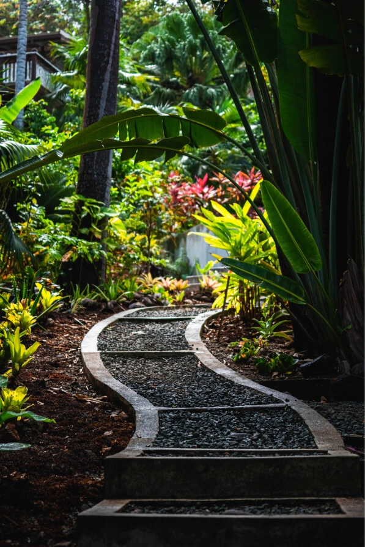
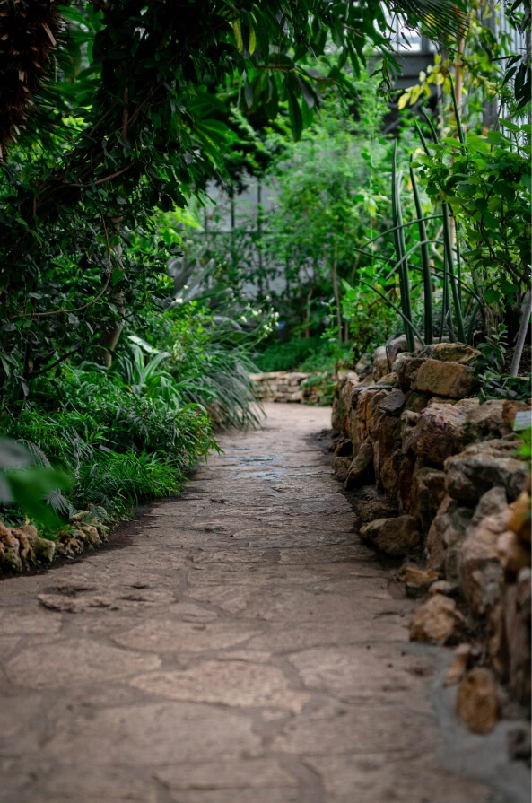
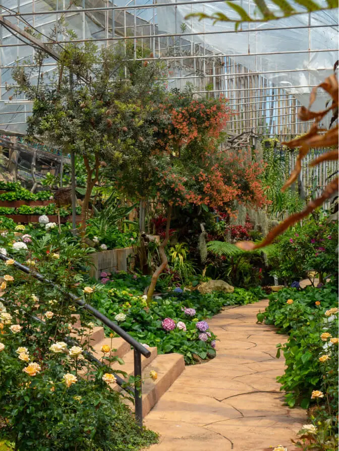
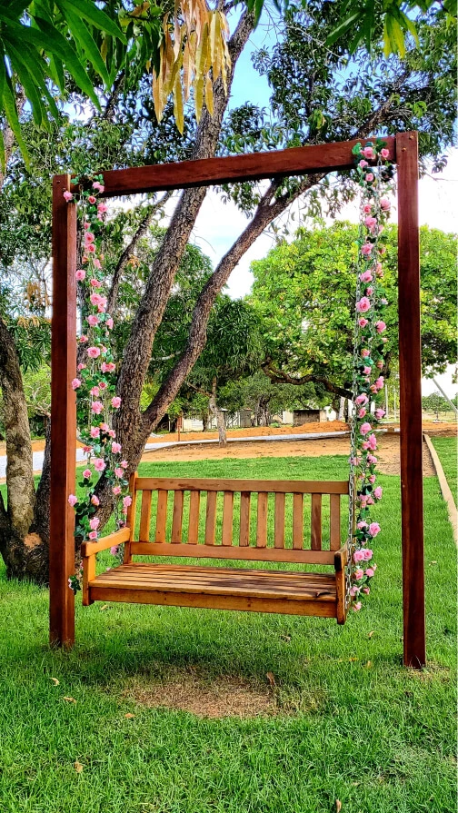
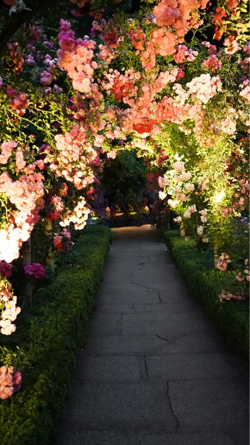
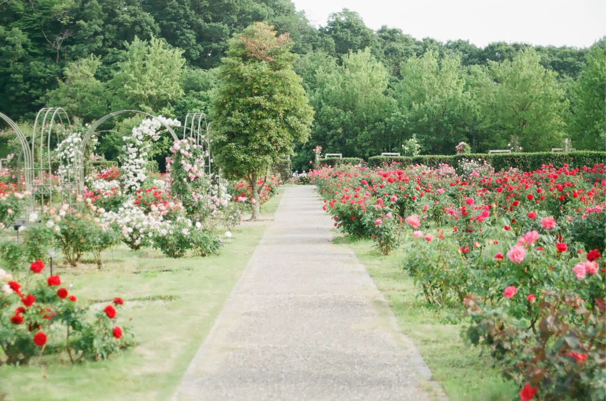
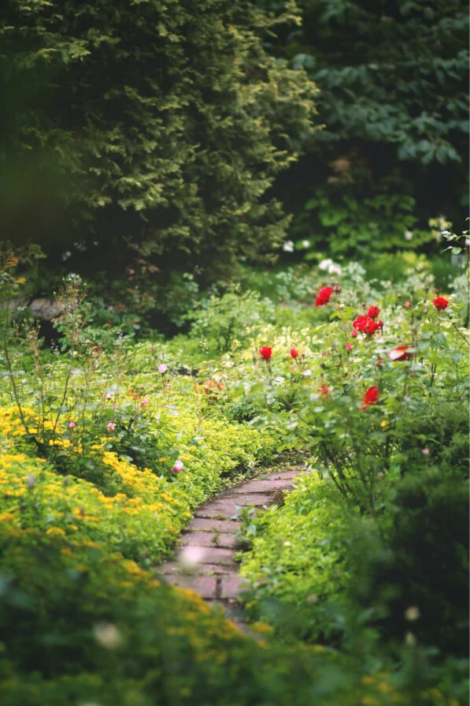
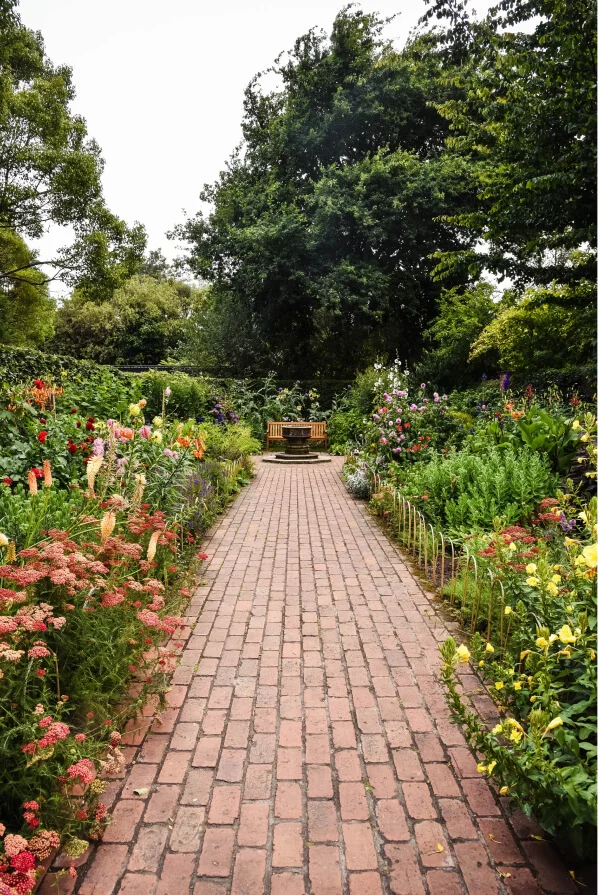
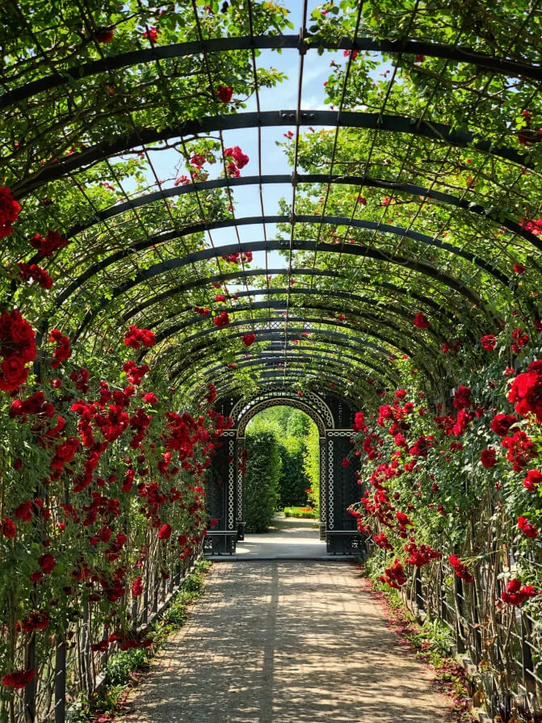
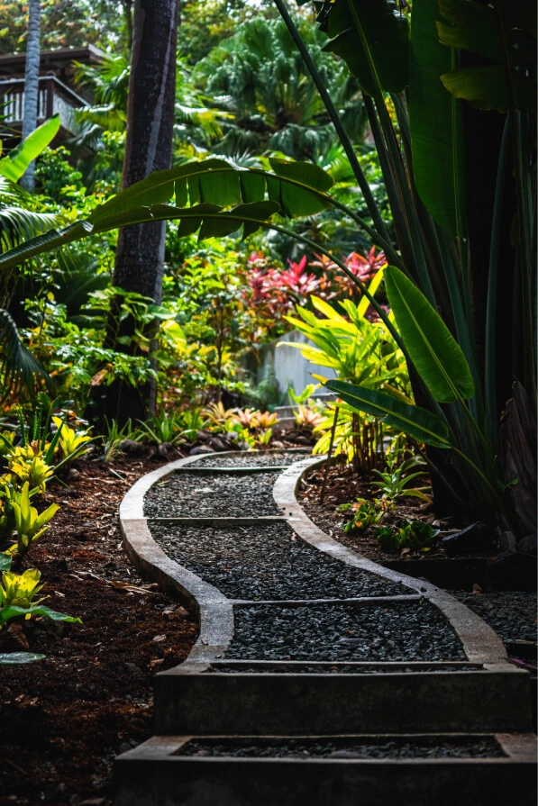
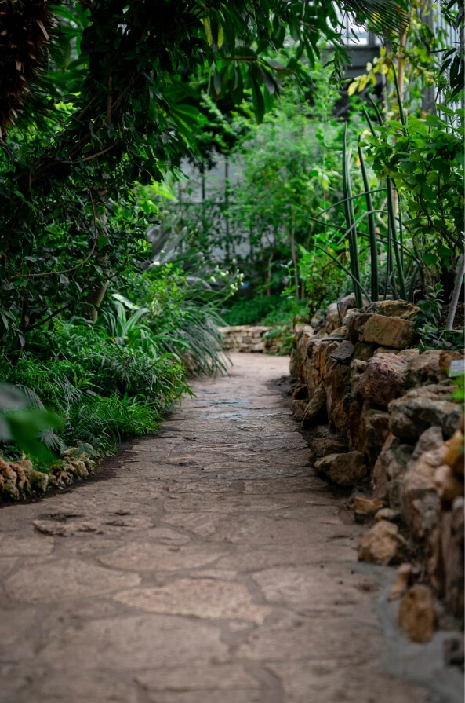
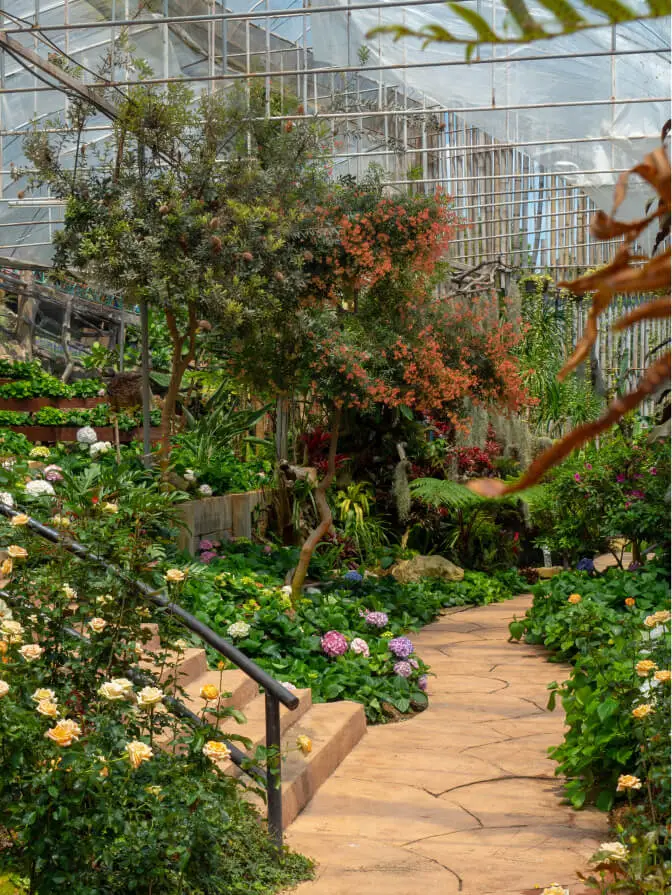
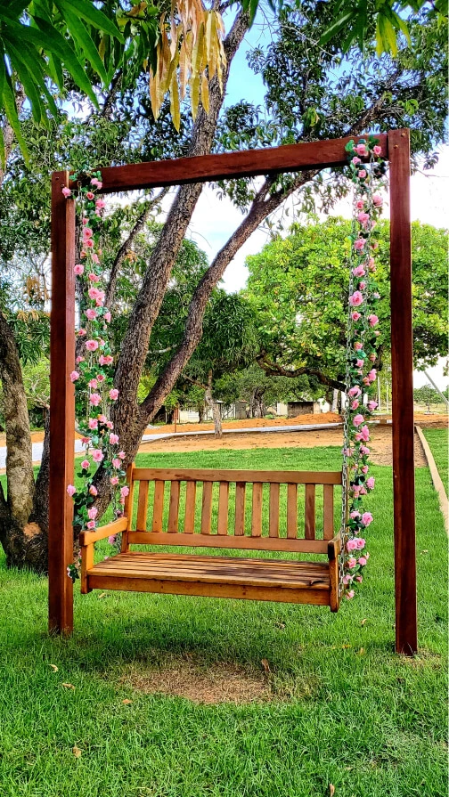
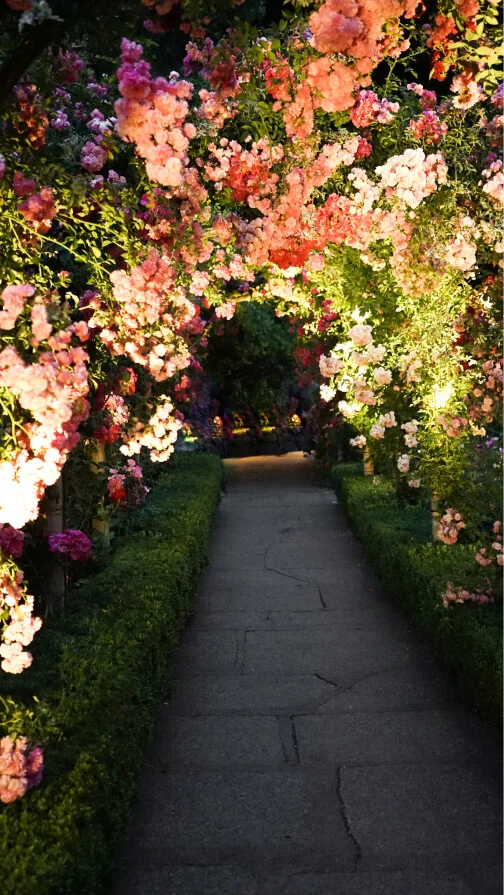
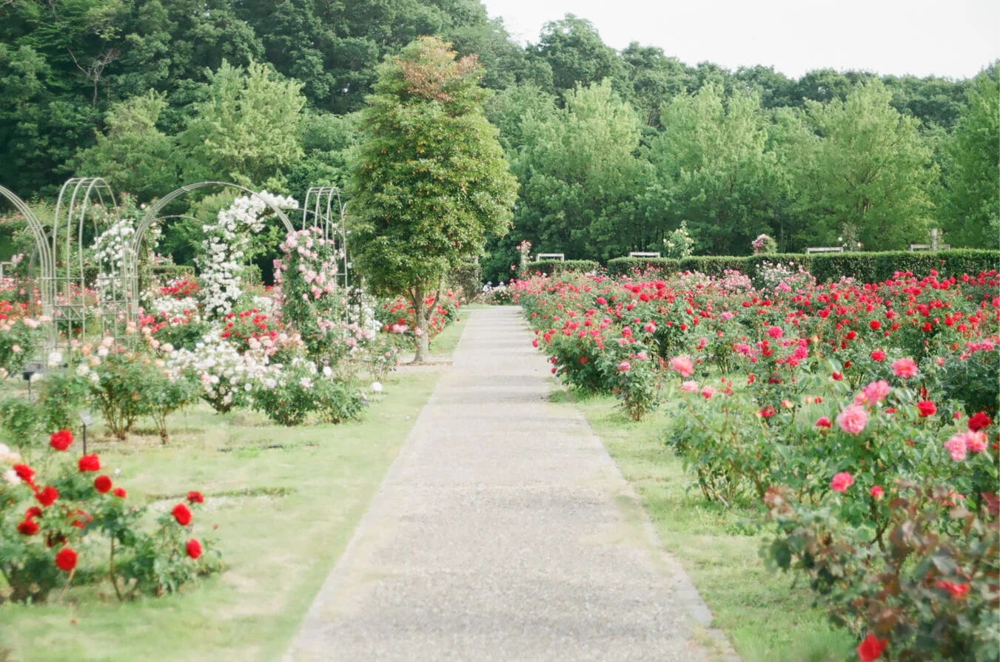
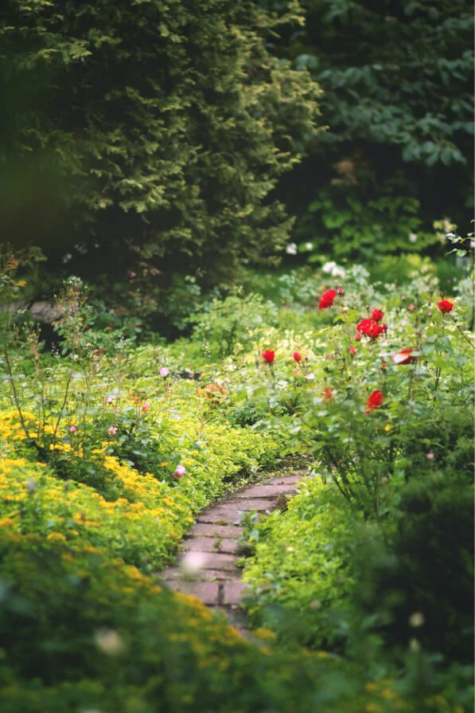
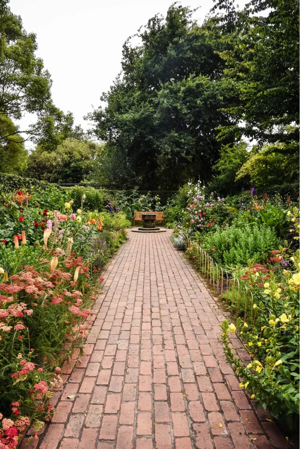
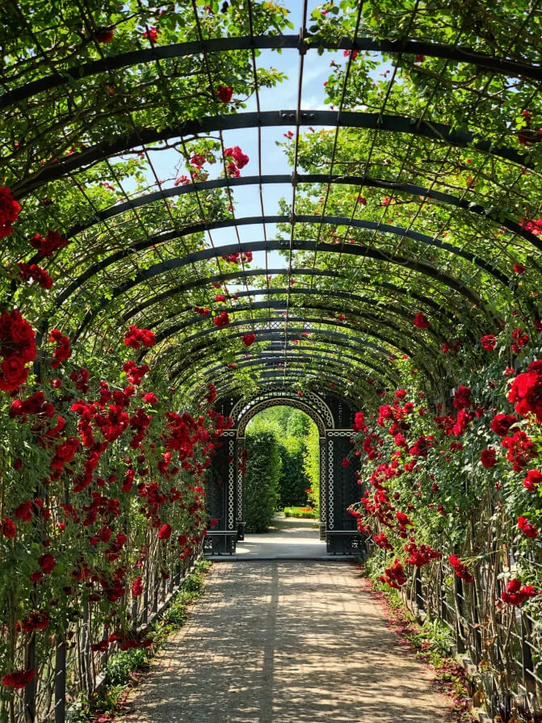
Zostańmy w kontakcie!
Znajdziesz nas na
Instagramie.
Śledź nasze najnowsze realizacje!
Instagram